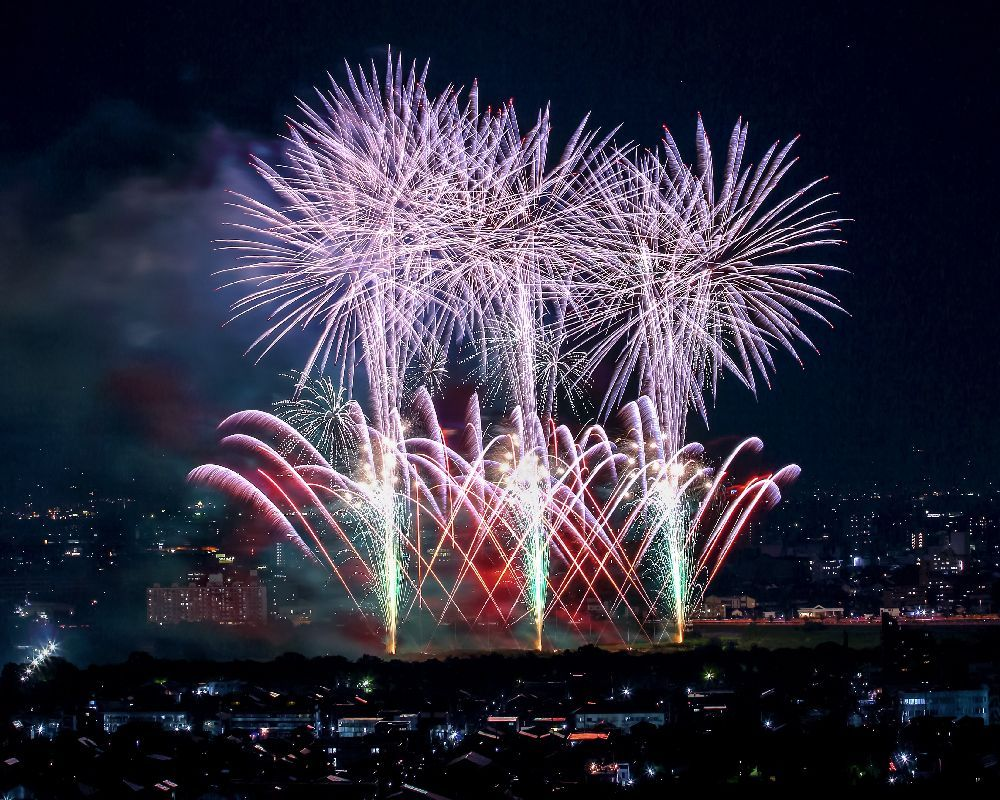
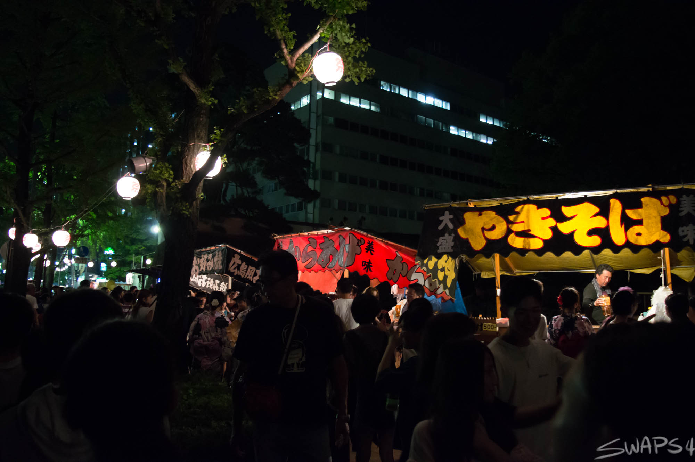

Takasaki Festival
This year's Hanabi Taikai at Takasaki is also going to have a matsuri. You can come enjoy
watching the fireworks and setting picnics at the park before and during the event. There
will be several pop-up stores and stands where you can buy matsuri items, food, accessories, etc. Expect the event place to be crowded. Masks are required.


Firecrackers are also sold at the place of event. On September 3, 2020, the firework show
will begin at 8 PM.